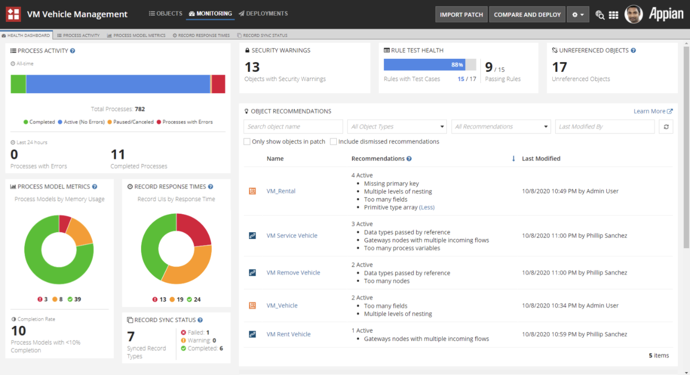

Appian's platform had grown feature-rich over many years, and the developer experience started favoring tech-savvy power users. New users, particularly those coming from a no-code background, struggled to build a mental model of how the platform fit together. There was no "orientation" layer, no place to get a high-level view of an application before diving into its components.
This meant new users had slow onboarding time, required ~2 months of high support, and felt lost rather than capable.
Design a transformed developer experience focused on new user comprehension, and give developers an accessible entry point into understanding their application.
The centerpiece of the work was an "Explore" page: a high-level overview of an application that surfaced its key components, relationships, and health in a single, scannable view. The design challenge was significant — making something genuinely useful for new users without dumbing it down for experienced ones (believe me, there were MANY people opposed to having a "new home page" that equated to "an extra click each time they logged in"), and surfacing the right level of complexity without overwhelming.
I led the year-long design process end-to-end, including overseeing close collaboration between designers and engineers to build the interactive functionality that made the Explore page work in practice. Some of the most delightful details required custom engineering work — the kind that only happens when design and engineering are genuinely in sync.
The broader "new user comprehension" initiative extended across several related workstreams. I designed the user experience behind a centralized dashboard that would help teams quickly understand the health of their application and easily take action to fix problems. I enjoyed working on a suite of features that guided users at every part of the development process: from error alerting during coding, to providing overall best practice feedback during review.

Alongside the platform work, I started a product illustration initiative to introduce graphics that added visual warmth and aided comprehension while also reflecting diversity and inclusion as core values. I led this team, overseeing the end-to-end process from concept through delivery across the platform.

Appian is where I grew up as a designer. Four years of working on a complex enterprise platform taught me how to navigate deeply technical constraints, advocate for users in an environment that doesn't always prioritize them, and lead collaboratively across design and engineering. The new user comprehension work in particular sharpened my ability to hold a long-term design vision through the noise of a big organisation — and to ship something that genuinely changed how people experienced the product.